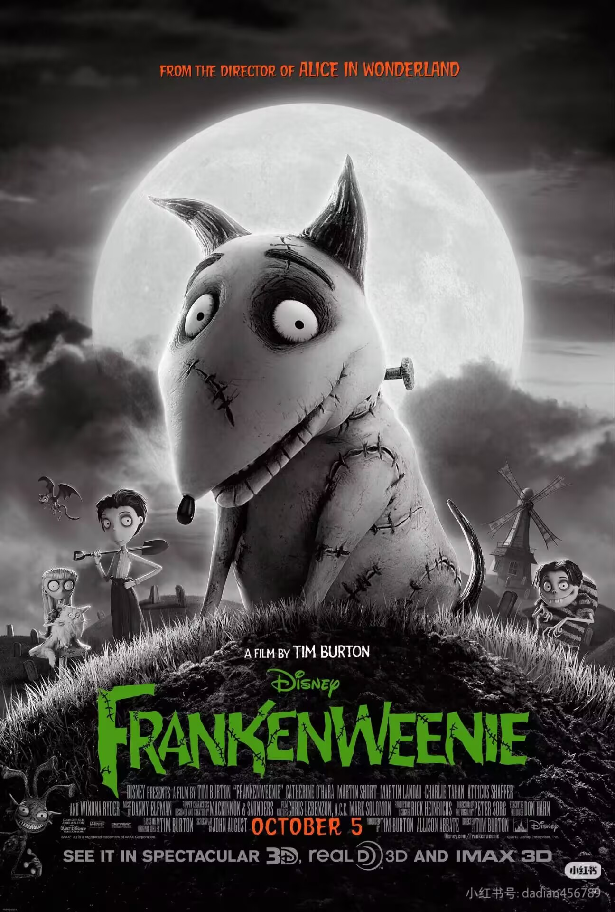
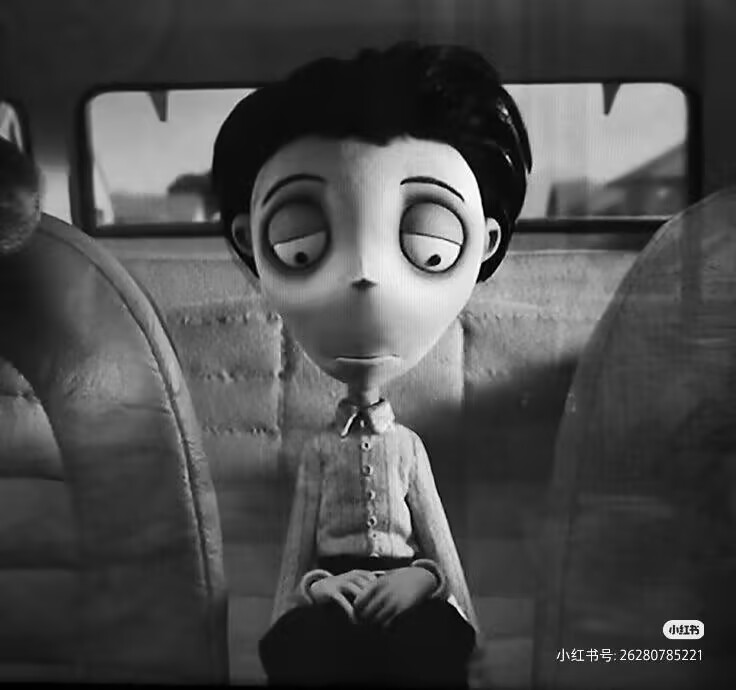
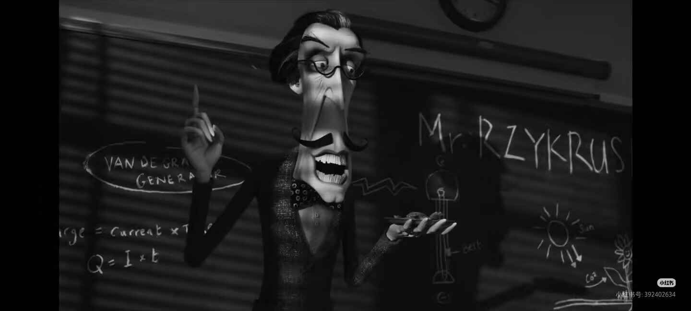
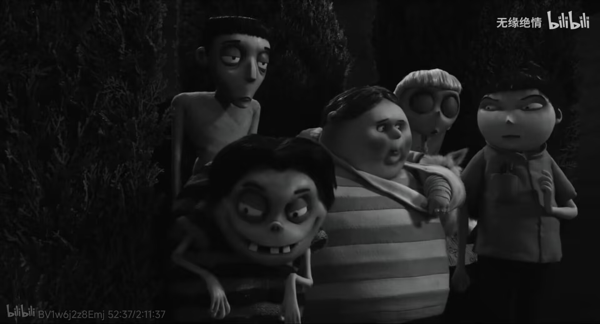

故事的起点
维克多和斯巴奇关系亲密。一次意外让斯巴奇死亡，维克多第一次直接面对自己无法接受的失去。电影真正的起点，不是实验，而是一个人面对客观现实后的情感冲动。
《科学怪狗》表面上是一个男孩复活爱犬的故事，但它真正提出的问题是：当我们拥有越来越强大的科学技术之后，应该怎样认识生命、面对现实，又应该如何正确地使用自己的能力？
维克多失去斯巴奇后，试图用科学让爱犬重新获得生命。实验成功，却带来了新的问题。故事最后真正被改变的，并不是死亡本身，而是维克多对生命、实践与责任的认识。

从“失去”开始，到“重新理解”结束。电影可以被看作四个连续的阶段：一个愿望进入实践，实践产生结果，结果又产生新的矛盾，最终推动认识发生变化。
维克多和斯巴奇关系亲密。一次意外让斯巴奇死亡，维克多第一次直接面对自己无法接受的失去。电影真正的起点，不是实验，而是一个人面对客观现实后的情感冲动。
维克多受到科学老师和课堂实验的启发，在阁楼实验室中进行实验。他成功让斯巴奇重新获得生命，但这个“成功”并没有结束问题，反而把故事推向下一阶段。
现实与愿望
知识进入实践
新的矛盾产生
认识进一步深化
维克多和斯巴奇关系亲密。一次意外让斯巴奇死亡，维克多第一次直接面对自己无法接受的失去。电影真正的起点，不是实验，而是一个人面对客观现实后的情感冲动。
先观察人物，再进入人物背后的问题。点击人物图片后，右侧会展开对应介绍；未选择时，内容框保持收起状态。



这部电影不需要堆砌很多理论。围绕维克多的行动，重点抓住两个最清晰的角度：实践与认识、矛盾与发展。
实践是认识的来源和动力，认识又反过来指导实践。维克多先获得科学知识，再把知识转化为实验；而实验结果又迫使他重新认识生命。一次成功的实践，不等于认识已经终结。
科学技术能够帮助人认识和改造世界，但具体的实践也可能产生新的矛盾。维克多原本只想让斯巴奇回来，却不得不面对实验被知晓、模仿以及失控的后果。解决一个问题，并不意味着所有问题都消失。
电影最后需要回到我们自己：面对失败、学习知识、使用能力时，我们应该怎样行动？
考试失败、计划落空、竞赛失利，也会让我们产生“如果能重来一次就好了”的想法。面对挫折的第一步，是认识现实；第二步，才是寻找能够改变的东西。
学习专业知识不能停留在“我会背”。实验、项目、社会调查、实习和真实问题，都是把理论变成能力的实践。更重要的是接受实践反馈。
今天的 AI、科研和专业技术也一样。越有能力的人，越需要考虑后果、边界和责任。能力与责任应该同步增长。
如果你是维克多，你会怎么做？